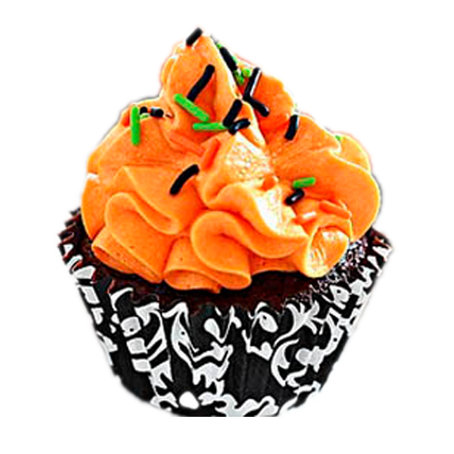

curdle
you probably already know. I am a children’s book of shapes. I am no onion. I have no idea,
anymore, the kind of paper doll I am but I am fairly certain I am in my underwear and no, I don’t want to get dressed. Come fuck me instead. Whisper “I’m not going to break up with you” again.
I have made you my illness. It passes the time. Like turning the light switch off and on. I want to
tell you that I’m starting to love you in the worst way, a dragon. Of fucking compassion. The
panic is climbing up my back now. I’m trying, but I’m typhoid. You are trying, but you’re jail
break. Or, you are a villain in a story that I made up
you are actually the hero I am the villain I am yanking your curtain
cord, open, open, open for me. If only I would. Leave you be.
You don’t want can’t stand expectation.
My hope like plastic straws in your throat.
It’s a recipe from my mother. Add coriander. I fear every word that comes out of my mouth will
be a bomb lit by the words I’m sorry. And I am. We are breaking and I’m just matilda-ing at the
vase, willing it to splinter on the desk, just go ahead already, just put your fist down, I’ve got the
basket ready, we all know what’s about to drop and it’s an anvil of a sentence that has been in the
sky since we joined hands under it during a moment of optimism. It’s all in our heads, baby.
Every time I email you my lungs
Don’t give me silence.
I am sicker than you. Let’s make it a contest. The winner gets to
wait.
excavation
I sometimes wish if you’d asked me if you’d asked me I could have just told you
with the door of my mouth and cave sound that, dear, I don’t need to be your other either, your
significant, your yours. You wouldn’t have believed me but it’s true, I am an installation.
Different in a garage than in a warehouse than in the MoMa. What I mean is as a picture I
adjust to the frame. What I mean is I’m much more capable of promiscuity of NSA of
distance than you think I am, of expanding, of loving you on the margins of our lives. I only
want to know if it’s going to rain so I can bring my umbrella. What to expect. A course
breakdown. Class on Tuesdays 2-4 and Thursday 2-4. The first time you pushed
me back from you you you told me this feels like it’s going to be a relationship. I wasn’t sharp
enough at the time to remind you that everything already is. You said then you don’t seem like
someone who wants to have casual sex. Didn’t seem like. Honey. You should see my dating
profile. Sure, I was childlike around you. That’s just the medusa of vulnerability, some people
turn to stone and others, infants. Didn’t seem like. Honey! You didn’t seem like someone who
would come back in a year to tell me you loved me and then dip roll out of the moving car you
were driving but. We are surprises. We are predicted. Honey! You called to me as I almost got off
the train at the wrong stop. The last time you said I don’t want to be someone’s
girlfriend. I was slipping on my silence and fighting to pull cotton frustration out from my throat
and only after I hung up did I cough did I want to scream: me neither! The world is flush. We
had other choices. Sometimes when I’m on 6th Avenue or on Franklin Avenue or in
my own bathroom I think, you must have felt like I was chasing you with a pillow and a Greek
tragedy. But then, all we did was fall into each other in fireworks, screech, then weekly talk on
the phone. I didn’t, like, propose. I did not duct tape my finger to your doorbell. I can’t know
how it felt to you but I (think I) know what I did and that was merely try to reach across a
widening gulf because I loved you and baby, sorry if you hate that, but I feel an
urge to keep reminding you that you sent me an invitation to your new year’s party you asked me
back! say yes elliot smith! and I signed my name and bippity boppity here we are and oh,
yes, I was saying I had strict instructions to stay landlocked while the water lapped my legs
except when you called my name. After it all, though, after it all! My anger is so
turbulent, it picks up speed and bullet points. I’m making a case for no one. Order in the court.
Oh, remember when we went to court? You liked to buy me candy that day, I’m still picking it
out of my teeth. But then I think, my only sin was not saying: What is going
on? Direct communication fails in the face of a flailing heart-like-snotty-child throwing a
tantrum in the grocery story. Did I want to scream: yes. Fear had me locked in
myself. That paint’s not on you. I sometimes wish
if you’d asked me if you’d asked me I could have just told you
we could have just been tangential lovers. Ellipsis at the ends of sentences. Peripheral, but sweet.
I was going to tell you but your monologue ate mine. It was your participation I wanted not your
stay. And I didn’t get to say: no, they’re not exclusive. I can be scarce and find freedom there. I
am doing that now. No one hangs their hat on me except for those I’ve given hats and
hooks, and that’s the point, baby. I’m not so different from you. My skin crawls at loud noises I
love like an orchestra I still want to be left alone most of the time. What did you think I
wanted? What did I think you wanted? Maybe we did our best, but I can’t get over what feels
like the useless rot of seeds that were going to be trees. It didn’t matter what kind.
My therapist says I am negotiating with a ghost: now I’m writing to one. You have
thought it to death. It is CPR. This is one more way.


GUEST CURATED BY TRACY MAY FUAD
LELAH LEWIS CHILDS
DEV VARMA
CHELSEA HARLAN
NICK CORDARO
JOSH BRECHNER

CHELSEA BRUCK & ALLISON PUTNAM
SARAH DUNCAN
NOOR AL FAYEZ
DRURY BRENNAN
OLIVER WILLIAMS